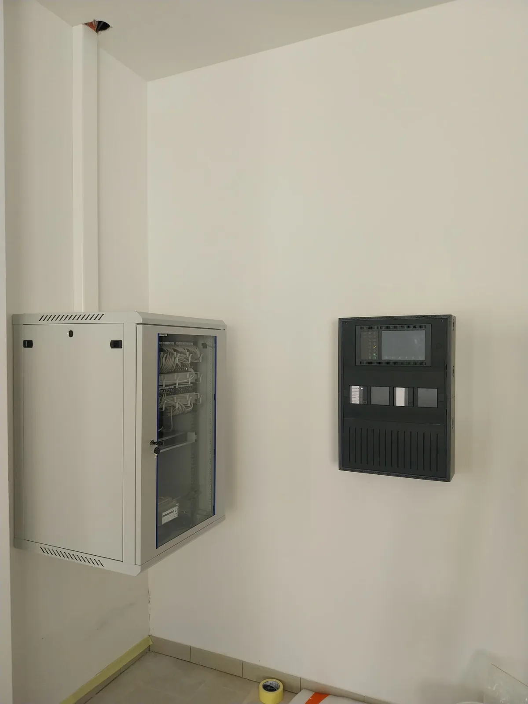
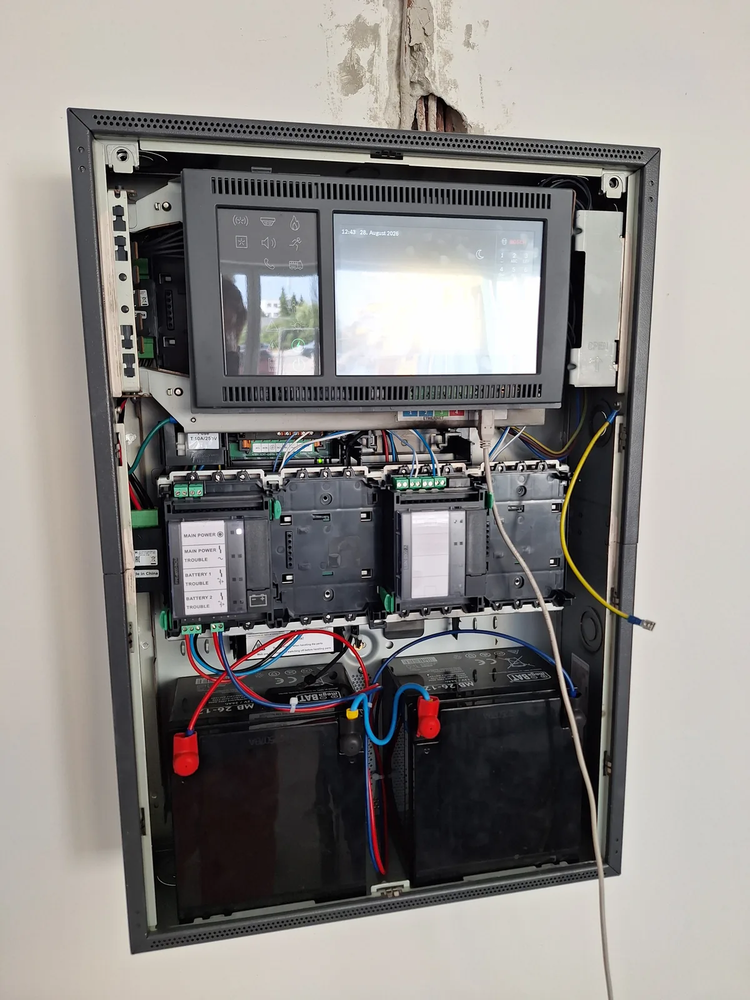
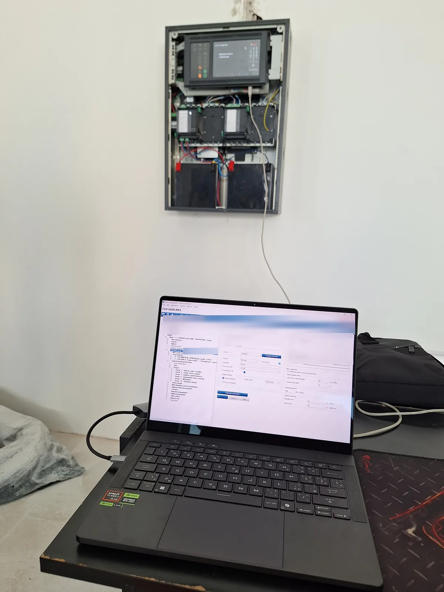
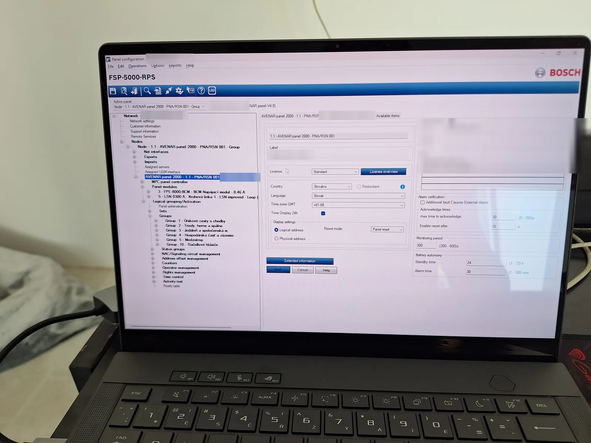

Elektronikus tűzjelző rendszer (EPS): Bosch AVENAR panel 2000
Életvédelmi rendszer — óvoda és iskola, Szlovákia
01 / Áttekintés és szabványok
Egy szlovákiai óvoda és iskola elektronikus tűzjelző rendszerének (EPS) telepítése, LSN hurok programozása és épületintegrációja. A tűzjelző központ egy Bosch AVENAR panel 2000; az ajtótartókat, a főelosztó munkaáramú kioldóját és a GSM tárcsázót a központ belső sínjén ülő RML 0008 A relémodul vezérli.
A projekt tervét (eszközelrendezés, helyiségek és a vezérlési mátrix logikája) a csapat és a jogosultsággal rendelkező felügyelő készítette, aki a szükséges jogosultsággal rendelkezik, és ő felel érte. Én telepítettem, címeztem, programoztam, és a helyszínen hibát kerestem.
- Egyértelmű riasztások: a központ funkcionális zónákat és helyiségneveket mutat, nem nyers LSN buszcímeket.
- Fail-safe vezérlések: a menekülési ajtók riasztáskor és tápkimaradáskor is nyithatók.
- Akkumulátor-autonómia EN 54-4 szerint: 24 óra nyugalmi és 30 perc riasztási üzem.
| Hivatkozott szabvány | Terület |
|---|---|
| STN EN 54-2 | Tűzjelző központok |
| STN EN 54-3 | Hangjelzők, akusztikai paraméterek |
| STN EN 54-4 | Tápegységek és akkumulátor-méretezés |
| DIN 33404-3 | Kiürítési hang: csökkenő sweep 1200 → 500 Hz, 1 s alatt |
Képesítések
Certified Designer & Engineer – Fire Alarm Systems / EPS (Bosch FPA 5000/1200, AVENAR)
GyártóiGyártói (Bosch) tanúsítvány, kiállító: Bosch Building Technologies Europe, 2026. március.
§21 (Vyhláška 508/2009 Z. z.)
JogszabályiSzlovák 508/2009 Z. z. rendelet.
02 / Hardver és topológia
| Szerep | Eszköz | Megjegyzés |
|---|---|---|
| Tűzjelző központ | Bosch AVENAR panel 2000 | Node 1.1, RPS-ben programozva. Érintőkijelző zónatérképpel és elérhetőségekkel. |
| Tápellátás | FPE-8000-BCM | Akkumulátorvezérlő az 1. sínpozícióban. 24 V DC, 2× 12 V 26 Ah SLA sorba kötve. |
| Hurokvezérlő | LSN 0300 A | Sínmodul, zárt hurok topológiájú LSN vonal. |
| Relékimenetek | Bosch RML 0008 A | 8 relés sínmodul a központ belső sínjén (nem LSN terepi eszköz). |
| Érzékelők | FAP-O420, FAP-425 | Optikai füstérzékelők. |
| Fényjelzők | FNS-420-R | LSN optikai riasztásjelzők (villogók). |
| Hangjelzők | FNM-420U-A-BS | LSN aljzatszirénák. |
| Kézi jelzésadók | Bosch FMC-420RW sorozat | Címezhető kézi jelzésadók, falon kívüli szerelésű. Visszaállító mechanizmus, állapot-LED, szervizkulccsal nyitható, felül csuklós fedél. |
| DC-DC konverter | Mean Well DDR-15G-12 | 24 V → 12 V, galvanikusan leválasztott, DIN-sínre szerelhető. A GSM tárcsázót táplálja. |
| Tárcsázó | GSM / SMS modul | A fém központszekrényen belül. |
Fotók




03 / Zónakiosztás
A riasztások funkcionális zóna és helyiségnév szerint jelennek meg, nem olyan LSN címekkel, mint Node 1.1, Dev 38. Az alábbi zónanevek pontosan azok, amelyeket a kijelző mutat, így a személyzet vagy a tűzoltóság másodpercek alatt leolvassa a tűz helyét.
| Zóna | Kijelzett név (SK) | Terület | Eszközök |
|---|---|---|---|
| Zóna 1 | Únikové cesty a chodby | Menekülési útvonalak és folyosók | Füstérzékelők, szirénák, villogók |
| Zóna 2 | Triedy, herne a spálne | Tantermek, játszószobák, hálóterem | Optikai füstérzékelők (FAP-O420), aljzatszirénák |
| Zóna 3 | Jedáleň a spoločenská m. | Étkező, közösségi terek | Nagy légterű optikai érzékelők, fali szirénák |
| Zóna 4 | Hospodárska časť a zázemie | Kiszolgáló rész, gépészeti helyiségek | Hő- és füstérzékelők |
| Zóna 5 | Medzistrop | Álmennyezet feletti tér | Rejtett optikai érzékelők külső jelzőfénnyel |
| Zóna 10 | Tlačidlové hlásiče | Kézi jelzésadók | Bosch FMC-420RW kézi jelzésadók |
04 / Vezérlési mátrix
A vezérlési mátrix logikája a kollégáim projekttervének része; az én részem a relékimenetek (RML 0008 A) megvalósítása volt.
Az épületfunkciókat a központ sínjén ülő RML 0008 A relémodul vezérli.
| Kimenet | Nyugalmi állapot | Tűzriasztáskor | Tápkimaradáskor |
|---|---|---|---|
| Mágneses ajtótartók | Feszültség alatt, menekülési ajtók tartva | A relé megszakítja a tápot, az ajtók mechanikusan elengednek | Elengednek (fail-safe) |
| Főelosztó (munkaáramú kioldó) | Munkaáramú kioldó nyugalomban | A munkaáramú kioldó kiold, a nem létfontosságú 230/400 V-os körök lekapcsolnak | Nem releváns |
| GSM tárcsázó | Potenciálmentes NC hurok zárva | A hurok nyit, a tárcsázó elküldi a riasztást | Az akkumulátorral pufferelt AUX sínről működik tovább |
A tárcsázó a fém központszekrényen belül van, így a potenciálmentes NC hurok nem hagyja el a szekrényt, a vezetékszakadás gyakorlatilag kizárt, és a hurok bármilyen megszakadása azonnal riasztást indít. Táplálása a 24 V-os AUX sínről, galvanikusan leválasztott Mean Well DDR-15G-12 konverteren át történik (24 V → 12 V), nem egyetlen akkumulátorról, ami felborítaná a sorba kötött akkumulátorok egyensúlyát.
05 / Műszaki kihívások és hibaelhárítás
Munka zárt ipari rendszerrel
A Bosch AVENAR, az RPS és az LSN zárt életvédelmi termékek. A nyílt forráskódú webes technológiákkal ellentétben minimális a nyilvános dokumentáció, a Stack Overflow-n sincs róluk semmi, és nincs használható AI tanítóadat a belső logikájukról vagy hibakódjaikról.
A munka a kapcsolási rajzok és a gyártói dokumentáció értelmezésén, a hurkon végzett multiméteres méréseken és gyakorlati hibabehatároláson alapult.
Sínmodulok sorrendje és a busz tápellátása
A központ nem ment át az első belső hardverellenőrzésen: a modulok rossz sorrendben voltak a belső sínen (PRS-0002A).
A központ hátlapja kötött fizikai sorrendet ír elő: az akkumulátorvezérlő táplálja a sínt, a többi modul áramfelvétel szerint követi, hogy elkerülhetők legyenek a belső DC busz feszültségesései és a logikai arbitrációs hibák.
Modulok áthelyezve az előírt sorrendbe: FPE-8000-BCM az 1. helyen a tápbetáplálás mellett, utána az LSN 0300 A hurokvezérlő, majd az RML 0008 A relémodul. A hardverellenőrzés hibátlanul lefutott.
sínpozíció modul funkció 1 FPE-8000-BCM akkumulátorvezérlő · tápbetáplálás 2 LSN 0300 A LSN hurokvezérlő 3 RML 0008 A 8 relékimenet
Szirénaaljzat bekötése: kapcsolási rajz vs. hardver
Az FNM-420U szirénaaljzatok nem szólaltak meg, és folyamatos hurokhibát okoztak.
A rajz kézi áthidalást írt elő két aljzatkapocs között. Az aktuális hardververzió ezt belül megoldja, így az elavult áthidalás megzavarta az LSN vonalfelügyeletet.
Áthidalás eltávolítva, az LSN vonal ismét gyári bekötésű. A szirénák azonnal címezhetővé váltak, a vonalhiba megszűnt.
Hurokhiba behatárolása T-tap módban
A zárt LSN hurok nem állt fel; az eszközök zárlatot és kommunikációkiesést jeleztek.
Zárt hurokban a központ mindkét végről kommunikál, ami elfedi a hiba tényleges helyét.
- A központ ideiglenesen nyitott (T-tap / csonk) lekérdezésre kapcsolva.
- Az eszközök címzése egymás után, a kábel mentén; a beolvasás a hibás pontnál megállt.
- Ennél az érzékelőnél a sorkapocs csavarja a szigetelést szorította le a csupasz vezető helyett. Vezető újracsupaszítva 8–10 mm-en, újraolvasás az utolsó eszközig, majd a hurok visszazárása RPS-ben.
BCM energiakeret túllépése (72 h vs. 24 h)
Az RPS hibaüzenete:
Fatal: Energy Zone 1 power consumption
exceeds the maximum limit (FPE-8000-BCM)
A készenléti idő 72 órára volt állítva. A nyugalmi áram 0,46 A, az akkumulátorkészlet 2× 12 V 26 Ah sorba kötve, ami 24 V 26 Ah — soros kapcsolásnál a kapacitás nem adódik össze.
Készenléti idő visszaállítva 24 óra + 30 perc riasztásra, ami az ehhez az épülethez megadott autonómia. Az RPS konzisztencia-ellenőrzés hibátlanul lefutott.
hasznos kapacitás 26 Ah × 0,8 = 20,8 Ah 72 h készenlét 0,46 A × 72 h = 33,1 Ah > 20,8 Ah ✗ max. 72 h esetén 20,8 Ah ÷ 72 h ≈ 0,29 A < 0,46 A ✗ 24 h készenlét 0,46 A × 24 h = 11,0 Ah + 30 perc riasztás ✓
06 / EPS beüzemelési ellenőrzőlista (műszaki önellenőrzés)
EPS BEÜZEMELÉSI ELLENŐRZŐLISTA (MŰSZAKI ÖNELLENŐRZÉS)
Állapot: TELEPÍTVE, PROGRAMOZVA ÉS MŰSZAKILAG ELLENŐRIZVE
Hivatkozott szabványok: STN EN 54-2, 54-4 | DIN 33404-3
RENDSZERELLENŐRZÉS:
24 V 26 Ah SLA akkumulátor ellenőrizve: 24 óra készenlét + 30 perc kiürítés.
Elavult szirénaáthidalás eltávolítva; kontakthiba T-tap módszerrel behatárolva.
FMC-420RW kézi jelzésadók és fényjelzők tesztelés során működőképesek.
munkaáramú kioldás (230/400 V lekapcsolás) és leválasztott NC GSM átjelzés.